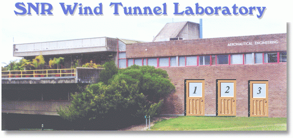

Welcome to the SNR (Simulated, Not Real) Wind Tunnel Laboratory at the School of Aerospace, Mechanical and Mechatronic Engineering,
University of Sydney. The building consists of three rooms, an administration office, a pattern shop and the wind tunnel labs.
In the SNR tunnel you can carry out aerofoil and wing experiments that will let you investigate the behaviour of various shapes under
different Reynold's number conditions. For further information and help you should visit the admin office.
|
Administration Office
(visit this room first)
This is where you go to arrange authorisation and book time in the tunnel. You can find out the cost of tunnel hire and get information on the tunnel operating specifications and limitations.
|
Pattern Shop
(Model Construction)
This is where the wind tunnel models are constructed. There are several numerical machines that can be used. The type of machine needed depends on the type of flow solution required. Once constructed, all models can be stored for future use in "the shed" out the back.
|
Wind Tunnels and Labs
(Testing)
This is where the testing is carried out. Models are mounted in the wind tunnel. Tests are run for specified velocities, angles and atmospheric properties. Our expert technicians will help you with the test program and provide a comprehensive set of force, moment and pressure distribution results.
|
Back to Top